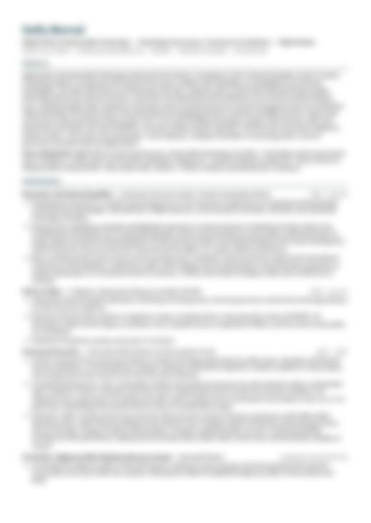

Actualmente en Londres, terminando la maestría en Internet Equalities en el Creative Computing Institute, UAL. De regreso pronto a la Ciudad de México.
Un laboratorio de narrativa digital sobre cómo habitamos los sistemas técnicos y especulamos futuros posibles. Escribo y pienso sobre tecnología, política y feminismo desde una perspectiva latinoamericana: lo que los sistemas digitales hacen con los cuerpos, los archivos y la organización colectiva.
Laboratorio narrativo, diccionario, archivo y/@ gramáticas posibles.
Ayudo a que las organizaciones adopten la IA de forma responsable, convirtiendo proveedores, riesgos y regulación en decisiones claras. Cinco años en Microsoft LATAM gobernando acuerdos complejos de tecnología con gobiernos, universidades y bancos, inicios en riesgo de pagos y una maestría en Internet Equalities.
Enfoque: gobernanza de proveedores y tecnología de IA, marcos de IA responsable (NIST AI RMF, EU AI Act), protección de datos y regulación de IA en América Latina.
MA Internet Equalities — Creative Computing Institute, UAL · Londres, 2025–2026 Ingeniería Industrial y Gestión de la Innovación — Universidad Panamericana, con intercambio en Korea University · México, 2017–2022 Licenciatura en Sociología con año de vinculación comunitaria en el Museo Nacional de los Pueblos Indígenas — UNAM · México, 2018–2023 Gobernanza de Internet (certificado) — Internet Society, 2026
En corto: me interesa cómo lo que documentamos, describimos y catalogamos decide lo que después se puede saber y recordar de las personas, y construir tecnología que sirva a nuestros intereses colectivos en lugar de ampliar las brechas sociales y el agotamiento ecológico.
Pienso los sistemas digitales como memoria. Nuestras bases de datos, plataformas y carpetas de fotos son memoria guardada fuera del cuerpo, en soportes técnicos, que moldea lo que percibimos y lo que somos capaces de recordar. Quien diseña esos soportes diseña, en parte, lo que una sociedad puede recordar y lo que olvida. Por eso me importa el archivo en todas sus formas (el álbum familiar, la biblioteca personal, la fotografía colonial, la base de datos) y las voces de las personas detrás de los objetos que guardamos.
Mi trabajo actual se centra en la invisibilización del trabajo de cuidado, particularmente el cuidado feminizado, y en la ausencia de una política del cuidado en las infraestructuras de internet: protocolos, bases de datos, plataformas e interfaces. Los archivos coloniales digitales son mi sitio de indagación actual, y veo el mismo patrón repetirse en los sistemas digitales en general. Trabajo con la ética del cuidado, los encuentros con el archivo, la fabulación crítica y lo fantasmal (el fantasma como figura sociológica, en Avery Gordon) para rastrear los futuros que quedaron fuera y las posibilidades que aún esperan ser abrazadas.
Leo, escribo y construyo contra-archivos, mapas interactivos e interfaces especulativas. Soy y estoy en el ciberfeminismo y el transhackfeminismo, con el feminismo glitch y la narrativa digital como compañías cercanas. Me apremia la gobernanza de internet, igual que la forma en que se construyen y disputan la raza, la identidad y la visibilidad en línea, en general y en América Latina en particular. También indago en la tecnología educativa y en lo que se vuelve legible o invisible cuando el cuidado y el aprendizaje se diseñan dentro de sistemas cerrados.
Mi trayectoria va de startups de pagos digitales (los primeros años del fintech en México), a programas de inversión en tecnología y desarrollo sustentable en el sector público, a una empresa global de tecnología.
En Microsoft LATAM pasé cinco años gobernando acuerdos complejos de tecnología con gobiernos, universidades e instituciones financieras reguladas en México y el Cono Sur, junto a equipos legales, de cumplimiento y finanzas. Ahí también cofundé el pilar indígena de los grupos de empleados de Microsoft México, con el que organicé un evento conjunto con el Museo del INPI, y fui Sustainability Champion de Microsoft México.
Ahora en el cruce entre tecnología feminista, política de cuidados y memoria cultural.
descarga mi CV (PDF) · perfil completo en LinkedIn

solicita mi CV detalladoLa versión detallada incluye referencias y cifras completas.
Hipervínculos a textos con mi nombre esparcidos por la web.
¿Trabajas en gobernanza de IA, política digital, tecnología responsable o educación en América Latina? Me encantaría conversar.
Currently in London, finishing an MA in Internet Equalities at the Creative Computing Institute, UAL. Heading back to Mexico City soon.
A digital narrative lab about how we live inside technical systems and speculate possible futures. I write and think about technology, politics and feminism from a Latin American perspective: what digital systems do to bodies, archives and collective organising.
Narrative lab, dictionary, archive and/@ possible grammars.
I help organisations adopt AI responsibly, turning vendors, risks and regulation into clear decisions. Five years at Microsoft LATAM governing complex technology agreements with governments, universities and banks, an early career in payments risk, and an MA in Internet Equalities.
Focus: AI vendor and technology governance, responsible AI frameworks (NIST AI RMF, EU AI Act), data protection and AI regulation in Latin America.
MA Internet Equalities — Creative Computing Institute, UAL · London, 2025–2026 BSc Industrial Engineering & Innovation Management — Universidad Panamericana, with an exchange at Korea University · Mexico, 2017–2022 BA Sociology with a year of community engagement at the National Museum of Indigenous Peoples — UNAM · Mexico, 2018–2023 Internet Governance (certificate) — Internet Society, 2026
In short: I'm interested in how what we document, describe and catalogue decides what can later be known and remembered about people, and in building technology that serves our collective interests rather than deepening social divides and ecological depletion.
I think of digital systems as memory. Our databases, platforms and photo folders are memory held outside the body, in technical supports, that shapes what we perceive and what we are able to recall. Whoever designs those supports designs, in part, what a society can remember and what it forgets. That is why I care about the archive in all its forms (the family album, the personal library, the colonial photograph, the dataset) and about the voices of the people behind the objects we keep.
My current work centres on the invisibilisation of care work, particularly feminised care, and on the absence of a politics of care in the infrastructures of the internet: protocols, databases, platforms and interfaces. Digital colonial archives are my current site of inquiry, and I see the same pattern repeat across digital systems more broadly. I work with care ethics, archival encounters, critical fabulation and haunting (Avery Gordon's ghost as a sociological figure) to trace the futures that were left out and the possibilities still waiting to be embraced.
I read, write and build counter-archives, interactive maps and speculative interfaces. I am, and stand, in cyberfeminism and transhackfeminism, with glitch feminism and digital storytelling as close companions. Internet governance matters urgently to me, as does how race, identity and visibility are constructed and contested online, in general and within Latin America in particular. I also explore educational technology and what becomes legible or invisible when care and learning are designed within enclosed systems.
My path runs from startups in digital payments (the early years of fintech in Mexico), to public-sector programmes in technology investment and sustainable development, to global tech.
At Microsoft LATAM I spent five years governing complex technology agreements with governments, universities and regulated financial institutions in Mexico and the Southern Cone, working alongside legal, compliance and finance teams. There I also co-founded the Indigenous pillar of Microsoft Mexico's employee resource groups, through which I organised a joint event with the INPI Museum, and served as Microsoft Mexico's Sustainability Champion.
Now at the intersection of feminist technology, politics of care and cultural memory.
download my CV (PDF) · full profile on LinkedIn
The detailed version includes references and full figures.
Links to texts with my name spread across the web.
Working in AI governance, digital policy, responsible technology or education in Latin America? I'd love to talk.